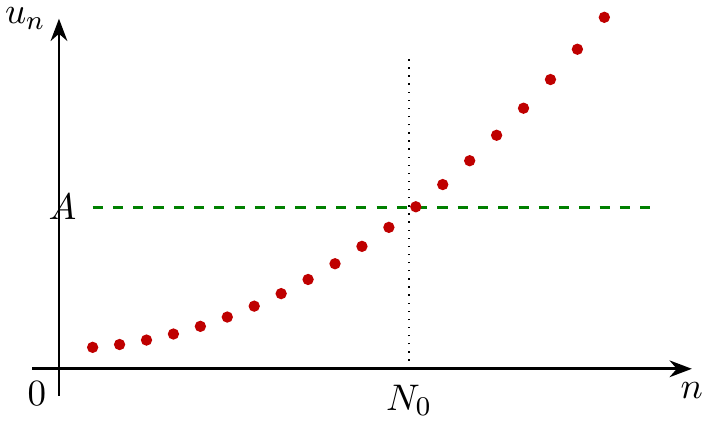
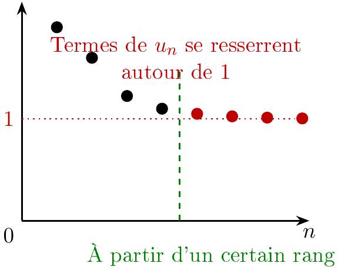
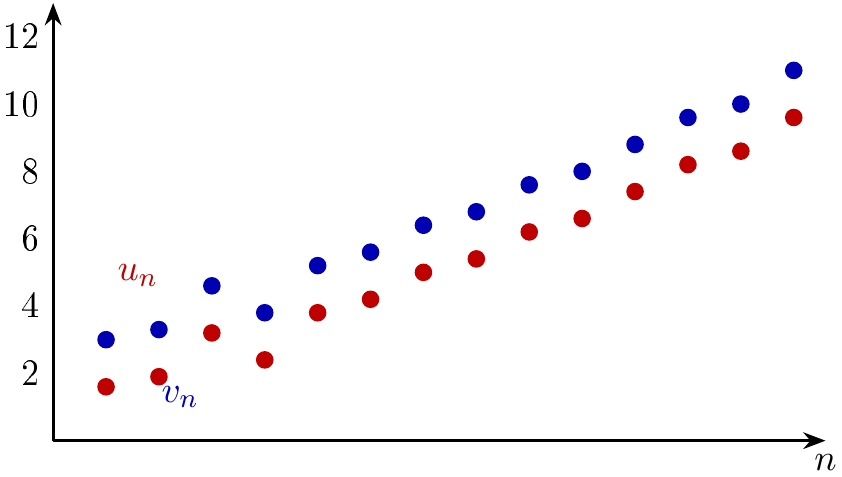
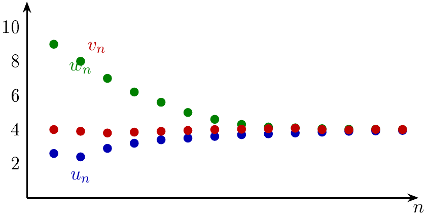

Les suites numériques
Terminale complémentaire · Chapitre 1 — Les suites numériques · cours de Frederik de Peyrelongue
I. Rappel
Suites arithmétiques
$(u_{n})$ est une suite arithmétique de raison $r$. Alors :
- $\forall n\in\N$, $u_{n+1}=u_{n}+r$ (formule de récurrence) ;
- $\forall n\in\N$, $\forall p\in\N$, $u_{n+p}=u_{n}+(n-p)\times r$ ;
- $\forall n\in\N$, $u_{n}=u_{0}+nr$ (formule explicite).
Soit $(u_{n})$ une suite arithmétique de raison $r$ :
Suites géométriques
$(u_{n})$ est une suite géométrique de raison $q$. Alors :
- $\forall n\in\N$, $u_{n+1}=q\times u_{n}$ (formule de récurrence) ;
- $\forall n\in\N$, $\forall p\in\N$, $u_{n+p}=q^{n-p}\,u_{n}$ ;
- $\forall n\in\N$, $u_{n}=q^{n}\,u_{0}$ (formule explicite).
Soit $(u_{n})$ une suite géométrique de raison $q$ :
II. Limite d'une suite
Suite de limite infinie
On dit que la suite $(u_{n})$ admet pour limite $+\infty$ si $(u_{n})$ est aussi grand que l'on veut à partir d'un certain rang ; on note :

La suite $(u_{n})$ définie pour tout $n$ par $u_{n}=n^{2}$ a pour limite $+\infty$.
On a par exemple : $u_{100}=100^{2}=10\,000$ ; $u_{1\,000}=1\,000^{2}=1\,000\,000$.
Les termes de la suite deviennent aussi grands que l'on veut à partir d'un certain rang.
Algorithme permettant de déterminer un rang à partir duquel une suite croissante de limite infinie est supérieure à un nombre réel $A$ :
On considère la suite $(u_{n})$ définie par $u_{0}=2$ et, pour tout entier $n$, $u_{n+1}=4u_{n}$.
Cette suite est croissante et admet pour limite $+\infty$.
En appliquant l'algorithme ci-contre avec $A=100$, on obtient en sortie $n=3$.
À partir du terme $u_{3}$, les termes de la suite dépassent $100$.
Langage naturel
Définir fonction seuil($A$)
$n\leftarrow 0$
$u\leftarrow 2$
Tant que $u<A$
$n\leftarrow n+1$
$u\leftarrow 4u$
Fin Tant que
Afficher $n$
Suite de limite finie
On dit que la suite $(u_{n})$ admet pour limite $L$ si $u_{n}$ est aussi proche de $L$ que l'on veut à partir d'un certain rang ; on note :
Une telle suite est dite convergente.
La suite $(u_{n})$ définie pour tout $n$ non nul par $u_{n}=1+\dfrac{1}{n^{2}}$ a pour limite $1$.
On a par exemple :

Les termes de la suite se resserrent autour de $1$ à partir d'un certain rang.
Une suite qui n'est pas convergente est dite divergente.
Remarque : une suite qui est divergente n'admet pas nécessairement de limite infinie. Par exemple, la suite de terme général $(-1)^{n}$ prend alternativement les valeurs $-1$ et $1$. Elle n'admet donc pas de limite finie, ni infinie. Elle est donc divergente.
Suites qui n'ont pas de limite
la suite $(t_{n})$ définie pour tout $n$ non nul par $t_{n}=(-1)^{n}$.
La suite $(t_{n})$ prend les valeurs $1$ et $-1$ : elle est bornée, mais je ne peux pas la rendre aussi proche de $1$ à partir d'un certain rang. En effet, elle alterne entre $1$ et $-1$.
Une suite qui n'est pas convergente est dite divergente. Une suite est dite divergente si sa limite est infinie ou si elle n'admet pas de limite.
Limites des suites usuelles
III. Opérations sur les limites
Utiliser les propriétés des opérations sur les limites
| $\limn u_{n}=\ell$ | $L$ | $L$ | $L$ | $+\infty$ | $-\infty$ | $+\infty$ |
| $\limn v_{n}=\ell'$ | $L'$ | $+\infty$ | $-\infty$ | $+\infty$ | $-\infty$ | $-\infty$ |
| $\limn (u_{n}+v_{n})=\ell''$ | $L+L'$ | $+\infty$ | $-\infty$ | $+\infty$ | $-\infty$ | F.I.* |
* Forme indéterminée : on ne peut pas prévoir la limite éventuelle.
$\infty$ désigne $+\infty$ ou $-\infty$
| $\limn u_{n}=\ell$ | $L$ | $L$ | $\infty$ | $0$ |
| $\limn v_{n}=\ell'$ | $L'$ | $\infty$ | $\infty$ | $\infty$ |
| $\limn (u_{n}v_{n})=\ell''$ | $L\,L'$ | $\infty$ | $\infty$ | F.I. |
On applique la règle des signes pour déterminer si le produit est $+\infty$ ou $-\infty$.
$\infty$ désigne $+\infty$ ou $-\infty$
| $\limn u_{n}=\ell$ | $L$ | $L\neq 0$ | $L$ | $\infty$ | $\infty$ |
| $\limn v_{n}=\ell'$ | $L'\neq 0$ | $0$ | $\infty$ | $L$ | $\infty$ |
| $\limn \dfrac{u_{n}}{v_{n}}=\ell''$ | $\dfrac{L}{L'}$ | $0$ | $\infty$ | $0$ | F.I. |
On applique la règle des signes pour déterminer si le quotient est $+\infty$ ou $-\infty$.
Tous ces résultats sont intuitifs. On retrouve par exemple un principe sur les opérations de limite semblable à la règle des signes établie sur les nombres relatifs.
Méthode : calculer la limite d'une suite à l'aide des formules d'opération
Calculer les limites : a) $\limn n^{2}+n$ b) $\limn \left(\dfrac{1}{\sqrt n}+1\right)\left(n^{2}+3\right)$ c) $\limn \dfrac{2}{-n^{2}-3}$
Correction
a) $\limn n^{2}+n=+\infty$
En effet :
D'après la propriété donnant la limite d'une somme : $\limn n^{2}+n=+\infty$.
b) $\limn \left(\dfrac{1}{\sqrt n}+1\right)\left(n^{2}+3\right)=+\infty$
En effet :
D'après la propriété donnant la limite d'un produit :
c) $\limn \dfrac{2}{-n^{2}-3}=0$
En effet :
D'après la propriété donnant la limite d'un quotient : $\limn \dfrac{2}{-n^{2}-3}=0$.
Cas des formes indéterminées (non exigible)
On peut reconnaître les formes indéterminées pour lesquelles il faudra utiliser des calculs algébriques ou d'autres propriétés sur les calculs de limites afin de lever l'indétermination.
Les quatre formes indéterminées sont, par abus d'écriture :
Méthode : lever une indétermination
Déterminer les limites suivantes : a) $\limn n-3\sqrt n$ b) $\limn n^{2}-5n+1$
Correction
a) $\limn n-3\sqrt n=+\infty$
Il s'agit d'une forme indéterminée du type « $\infty-\infty$ ».
On lève l'indétermination :
Donc, comme limite d'un produit : $\limn n\left(1-\dfrac{3}{\sqrt n}\right)=+\infty$.
Soit : $\limn n-3\sqrt n=+\infty$.
b) $\limn n^{2}-5n+1=+\infty$
Il s'agit d'une forme indéterminée du type « $\infty-\infty$ ».
On lève l'indétermination en factorisant par le monôme de plus haut degré :
Donc, comme limite d'une somme : $\limn 1-\dfrac{5}{n}+\dfrac{1}{n^{2}}=1$.
Donc, comme limite d'un produit : $\limn n^{2}\left(1-\dfrac{5}{n}+\dfrac{1}{n^{2}}\right)=+\infty$.
Soit : $\limn n^{2}-5n+1=+\infty$.
IV. Limites et comparaison
Théorèmes de comparaison
Soit deux suites $(u_{n})$ et $(v_{n})$.
Si, à partir d'un certain rang, on a
alors $\limn v_{n}=+\infty$.

Par abus de langage, on pourrait dire que la suite $(u_{n})$ pousse la suite $(v_{n})$ vers $+\infty$ à partir d'un certain rang.
Soit deux suites $(u_{n})$ et $(v_{n})$.
Si, à partir d'un certain rang, on a
alors $\limn v_{n}=-\infty$.
Méthode : déterminer une limite par comparaison
Déterminer la limite suivante : $\limn n^{2}+(-1)^{n}$.
Correction
On a : $(-1)^{n}\geqslant -1$, donc $n^{2}+(-1)^{n}\geqslant n^{2}-1$.
Or $\limn n^{2}-1=+\infty$, donc par comparaison, $\limn n^{2}+(-1)^{n}=+\infty$.
Théorème d'encadrement
Soit trois suites $(u_{n})$, $(v_{n})$ et $(w_{n})$.
Si, à partir d'un certain rang, on a
alors $\limn v_{n}=L$.

Par abus de langage, on pourrait dire que les suites $(u_{n})$ et $(w_{n})$ (les gendarmes) se resserrent autour de la suite $(v_{n})$ à partir d'un certain rang pour la faire converger vers la même limite.
Ce théorème est également appelé le théorème du sandwich.
Méthode : déterminer une limite par encadrement
Déterminer la limite suivante : $\limn 1+\dfrac{\sin n}{n}$.
Correction
On a : $-1\leqslant\sin n\leqslant 1$, donc :
Or :
donc d'après le théorème des gendarmes :
Et donc :
On utilise le théorème de comparaison pour démontrer une limite infinie, et le théorème d'encadrement pour une limite finie.
V. Limite des suites géométriques
Approche intuitive
La suite $(a_{n})$ est une suite géométrique de raison $q=1{,}5$.
La suite $(a_{n})$ est strictement positive (produit de facteurs positifs).
La suite $(a_{n})$ est strictement croissante : $a_{n+1}=1{,}5a_{n}$, donc $a_{n+1}-a_{n}=0{,}5a_{n}>0$.
Et la suite $(a_{n})$ ne semble pas bornée : je peux la rendre aussi grande que je veux. Elle augmente de $50\,\%$ à chaque itération.
Intuitivement, la suite $(a_{n})$ semble diverger vers $+\infty$.
La suite $(b_{n})$ est une suite géométrique de raison $q=0{,}5$.
La suite $(b_{n})$ est strictement positive (produit de facteurs positifs).
La suite $(b_{n})$ est strictement décroissante : $b_{n+1}=0{,}5b_{n}$, donc $b_{n+1}-b_{n}=-0{,}5b_{n}<0$.
Et la suite $(b_{n})$ est décroissante, et à chaque itération est diminuée de $50\,\%$.
Intuitivement, la suite $(b_{n})$ semble converger vers $0$.
Limite de $q^{n}$
Soit $q$ un nombre réel strictement positif.
- si $q>1$, alors $\limn q^{n}=+\infty$ ;
- si $0<q<1$, alors $\limn q^{n}=0$ ;
- si $q=1$, alors $\limn q^{n}=1$.
Limite de la somme des termes d'une suite géométrique
Soit $(u_{n})$ une suite géométrique de raison $q$, avec $0<q<1$ :
$S_{n}$ est la somme des termes d'une suite géométrique de raison $q$, donc
D'après le théorème 5.2, $\limn q^{n+1}=0$ car $0<q<1$, donc $\limn 1-q^{n+1}=1$ (par somme) ; et, en utilisant la limite d'un produit,
VI. Suites arithmético-géométriques
Définition
Une suite arithmético-géométrique est une suite $(u_{n})$ définie par la donnée du premier terme $u_{0}$ et de la relation de récurrence :
où $a$ et $b$ désignent deux nombres réels.
Cas particuliers :
$a=0$ : la suite $(u_{n})$ est une suite constante,
$a\neq 0$ et $b=0$ : la suite $(u_{n})$ est une suite géométrique de raison $q=a$,
$a=1$ et $b\neq 0$ : la suite $(u_{n})$ est une suite arithmétique de raison $r=b$.
Exemple : soit la suite $(u_{n})$ définie par $u_{0}=3$ et $u_{n+1}=3u_{n}+2$.